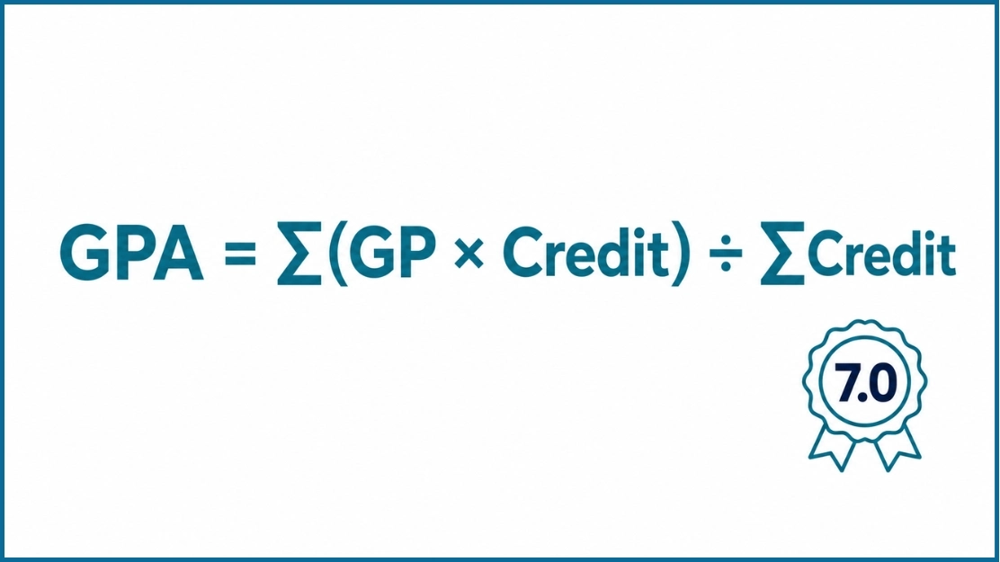

Australian 7-Point GPA Calculator
CGPA Calculator
Target CGPA
SGPA → CGPA
Australian Universities That Commonly Use a 7-Point GPA Scale
Many Australian universities use a 7-point GPA framework or publish GPA equivalents for students. Students from the following universities can generally use this calculator with confidence.
Important note: Some Australian universities primarily report WAM (Weighted Average Mark) instead of GPA. Others publish both GPA and WAM. Students should always check their university's official grading policy before interpreting results.
What Is an Australian GPA Calculator?
An Australian GPA Calculator works out your Grade Point Average using the country's 7-point grading system. It takes your subject grades and credit points and turns them into a weighted GPA, so you can keep an eye on how you're doing each semester and across your whole degree.
What Is GPA in Australia?
GPA stands for Grade Point Average — a number that sums up how you've done across your subjects by turning grades into points.
It's not just a straight average of your marks, though. GPA weighs in credit points too, so a subject worth more credits pulls more weight on your final number than a smaller one.
Most Australian universities recalculate your GPA at the end of every teaching period, which makes it a handy way to track your progress. Some put GPA right on your transcript; others mostly report a Weighted Average Mark (WAM) instead, and only calculate GPA when it's needed — for an exchange program or scholarship, say.
Since grading policies differ from one university to the next, always check your own institution's rules. This calculator is built around the standard Australian 7-point scale.
Why Is GPA Important?
Your GPA is more than just a summary of exam results — it's the full picture of how you've performed throughout your studies.
Universities lean on GPA when reviewing applications for honours, postgraduate study, exchange programs, and academic awards. Employers look at it too, especially for competitive graduate programs.
A solid GPA can open doors — scholarships, exchange spots, research opportunities, internships, postgraduate admissions, and awards all factor it in. Even if your university mostly reports WAM, it's still worth knowing your GPA for these kinds of applications.
Understanding the Australian 7-Point GPA Scale
Most Australian universities run on a 7-point scale, where each grade maps to a number. Your final GPA comes down to two things: the grade you earned and how many credit points that subject was worth.
| Grade | Meaning | GPA Value |
|---|---|---|
| HD | High Distinction | 7 |
| D | Distinction | 6 |
| CR | Credit | 5 |
| P | Pass | 4 |
| F | Fail | 0 |
Some universities also use extra grades like PC (Pass Conceded), CN (Continuing), WD (Withdrawn), or NS (Not Submitted). How these affect your GPA depends on the institution — check your university's own policy for the definitive answer.
What Do the Grades Mean?
High Distinction (HD) — the top grade, worth 7 points. It signals genuinely outstanding work and a deep grasp of the material.
Distinction (D) — worth 6 points. This reflects strong performance: solid knowledge, sharp critical thinking, and well-developed analysis.
Credit (CR) — worth 5 points, for above-average work that clearly meets the learning outcomes with good quality throughout.
Pass (P) — worth 4 points. You've met the minimum requirements and completed the subject.
Fail (F) — worth 0 points. The required outcomes weren't met, and this will pull your GPA down.
Australian GPA Formula

Most Australian universities on the 7-point scale calculate GPA with this formula:
Simple enough in theory — but doing this by hand across several semesters gets tedious fast. That's where a calculator saves you time and keeps the arithmetic error-free.
Understanding the Formula
Credit Points — the weight assigned to each subject. Most undergrad subjects carry the same value, though placements, projects, and practical courses can differ.
Grade Value — the number behind each letter grade: HD = 7, D = 6, CR = 5, P = 4, F = 0. Everything else is built on these.
Weighted Grade Points — grade value × credit points, for each subject. A Distinction (6) in a 6-credit subject gives you 6 × 6 = 36. Add these up across all your subjects to get your final GPA.
Manual GPA Calculation Example
Here's what that formula looks like with real numbers.
| Subject | Credit Points | Grade | GPA Value | Weighted Points |
|---|---|---|---|---|
| Accounting | 6 | HD | 7 | 42 |
| Finance | 6 | D | 6 | 36 |
| Marketing | 6 | CR | 5 | 30 |
| Management | 6 | P | 4 | 24 |
| Economics | 6 | HD | 7 | 42 |
| Total | 30 | — | — | 174 |
GPA = 174 ÷ 30 = 5.80
That's a GPA of 5.80 — sitting right between Credit and Distinction average. Add more semesters, and your university folds those subjects and credits into an updated cumulative GPA.
GPA vs WAM: What Is the Difference?
A lot of students assume GPA and WAM are the same thing. They're not — each one measures your performance a different way.
GPA turns your grades into numbers on a scale, and on the Australian 7-point system that's 0 to 7. WAM, on the other hand, works directly with your percentage marks, averaged and weighted by each subject's credit value — no grade points involved.
Some universities show both on your record. Others mainly report WAM and only calculate GPA when it's needed, like for an exchange program or international application. Knowing the difference helps you read your own results correctly.
| Feature | GPA | WAM |
|---|---|---|
| Full Meaning | Grade Point Average | Weighted Average Mark |
| Based On | Grade values | Percentage marks |
| Typical Scale | 0–7 | 0–100 |
| Measures | Overall grade performance | Average numerical marks |
| Common Uses | Scholarships, exchange programs, international applications | Academic transcripts, graduation requirements |
If your university reports both, don't expect them to match up perfectly — they're calculated differently and serve different purposes.
Can You Convert Australian GPA to a Percentage?
A lot of students go looking for a simple GPA-to-percentage formula. There isn't one that works across every Australian university.
Each institution sets its own grading framework. Some publish official conversion guidelines; others don't offer any direct conversion at all. Either way, it's best to steer clear of unofficial conversion charts floating around online.
If an employer or university asks for a percentage equivalent, go straight to your institution's academic office or official documentation. That's the only way to keep your records accurate and credible.
What Is a Good GPA on the Australian 7-Point Scale?
A GPA above 6.0 is generally seen as excellent — that's consistent Distinction and High Distinction territory. Above 5.0 is still a strong result at most universities.
Most postgraduate coursework programs in Australia ask for a minimum GPA of 5.0 (Credit), while research degrees — Honours, Masters by Research, PhD — usually want 6.0 or higher. A 6.0+ GPA is also competitive when it comes to graduate employers and scholarships.
Tips to Improve Your GPA
Raising your GPA is less about one big push and more about steady habits — small gains each semester add up.
Attend Classes Regularly — showing up consistently means you catch key concepts before assignments and exams hit, instead of scrambling to fill gaps later.
Prioritize High Credit Subjects — a strong result in a subject worth more credits moves your overall average further than the same effort in a smaller one.
Submit Assessments on Time — assignments, projects, and quizzes carry real weight in your final grade, and turning in solid work before the deadline keeps your marks intact.
Review Lecturer Feedback — it points straight at what to fix next time, so use it instead of letting it sit unread.
Create a Weekly Study Schedule — spreading your study out across the semester beats cramming, and it sticks better too.
Ask for Academic Support — talk to lecturers, tutors, or advisers as soon as something's not clicking. Catching it early is a lot easier than fixing it later.
Track Your GPA Every Semester — don't wait until graduation to check in. Regular tracking makes it easy to see what's working and adjust course.
Common GPA Calculation Mistakes
Entering wrong credit points — this throws off your final GPA, so always go with the credit values on your official enrolment or transcript.
Selecting the wrong grade — a mismatched grade auto-changes the GPA value behind it, so stick to what's on your official result.
Ignoring failed subjects — a fail usually means 0 grade points, and it still counts. Don't leave it out of the calculation.
Mixing GPA and WAM — they're two different measures that can give different numbers. Keep them separate.
Using another country's grading scale — a 4.0 or 10-point calculator won't give you a correct Australian GPA. Make sure you've picked the right system.
Forgetting repeated subjects — universities handle repeats differently: some swap in the new grade, others keep both attempts on record. Check your institution's policy to be sure.
Benefits of Using This Calculator
Fast Calculations
Every grade and credit you enter instantly updates your GPA and progress bar — no manual work needed.
Accurate Weighted GPA
Uses the correct Australian 7-point weighted formula so your result reflects exactly what your university calculates.
Multi-Semester Support
Add unlimited semesters and subjects. Each semester shows its own GPA, and the overall result reflects your complete academic record.
PDF Report Export
Download a professional academic report with all semesters, subjects, and GPA breakdown — ideal for scholarship and graduate applications.
Built for Australian Universities
Pre-configured for the exact grading scale used by University of Queensland, Griffith University, RMIT, and similar institutions.
Free and Mobile Friendly
Fully responsive and works on all screen sizes. No registration required. Free for unlimited calculations.
Frequently Asked Questions
A GPA sums up your academic performance using grade values for each subject. Most Australian universities calculate it on a 7-point scale, where HD = 7, D = 6, CR = 5, P = 4, and F = 0.
Yes — 7.0 is the ceiling on the standard Australian scale, and you'd need High Distinctions across every subject to hit it.
Above 6.0 is generally seen as excellent, reflecting consistent Distinction and High Distinction results. Above 5.0 is still solid at most universities.
Total weighted grade points divided by total credit points: GPA = Total Weighted Grade Points ÷ Total Credit Points. Each subject's weighted points come from its grade value times its credit points.
No — plenty use the 7-point scale, but others mainly report a Weighted Average Mark (WAM) instead, and some publish both. Check your own university's policy to be sure.
GPA works from grade values assigned to letter grades. WAM works directly from your numerical marks and subject weighting. Both measure performance, but the math is different, so the results won't match exactly.
Yes — if your Australian university uses the 7-point GPA system, this calculator works for you too.
Yes — a fail is usually 0 grade points, which drags your GPA down, and it still counts toward your total credit points.
Depends on your university — some swap in the new grade, others keep both attempts on record. Check your institution's official policy for the specifics.
Yes — just enter the subjects from one teaching period. You can also stack multiple semesters together if you want a cumulative GPA.
Whatever's listed for that subject in your university handbook, transcript, or enrolment record. Getting this wrong will skew your GPA.
Yes, completely — no account, no fee, use it as often as you like.
Yes — it works for postgrad coursework students too, as long as your university uses the Australian 7-point scale.
They're calculated differently — GPA runs on grade values, WAM runs on percentage marks weighted by credit. Different formulas, different numbers.
There's no standard formula for that. Universities follow their own policies, so check with your institution if you need an official conversion.
CGPA Guides & Resources
What Is CGPA?
Understand what CGPA means, how it differs from GPA, and why universities worldwide use it to measure academic performance.
Read guide → →CGPA Formula Explained
Break down the weighted average formula with step-by-step examples using quality points and credit hours.
Read guide → →What Is a Good CGPA?
Find out what your CGPA means for jobs, graduate school, and scholarships — with realistic benchmarks by field.
Read guide →